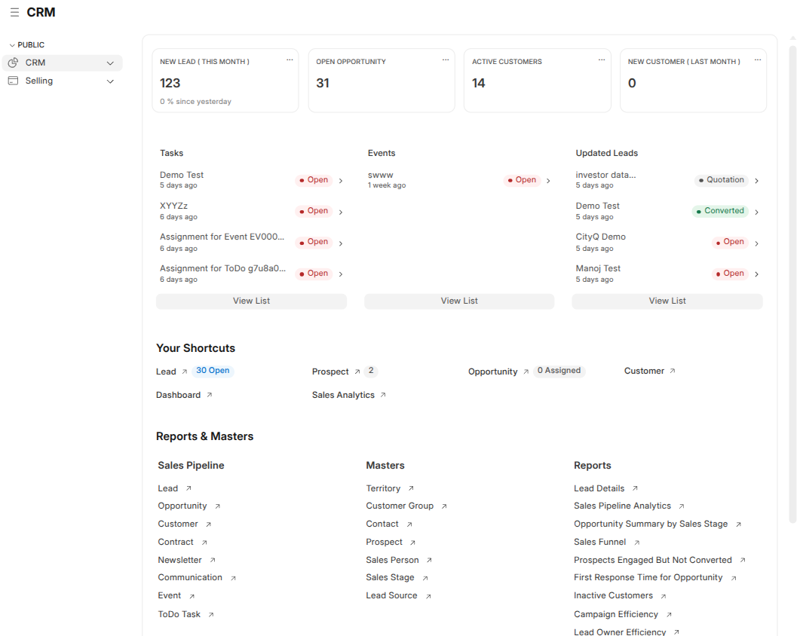
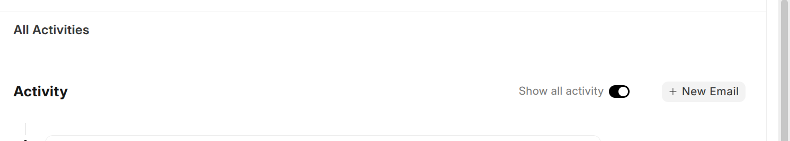

CRM & Selling Module Overview
Workspace Overview

After logging in, users can access the following workspaces from the left-hand navigation panel:
CRM Workspace
Under the CRM workspace, users can manage all pre-sales activities, including:
- Leads
- Opportunities
- Customers
Selling Workspace
Under the Selling workspace, users can manage sales transactions, including:
Cards, quick lists, and charts are displayed based on the selected workspace or module.
The Your Shortcuts section provides quick access to frequently used actions
within the selected workspace.
Below the shortcuts, users can find the Reports and Masters sections,
which provide access to analytics, configurations, and master data.
Note: All workspaces are customizable based on company requirements
and user permissions.
User Roles & Permissions
Sales User
Sales Users can perform core sales operations, including:
- Create and update Leads
- Create Opportunities, Prospects, Quotations, Sales Orders, and Customers
Access is restricted based on defined workflows and organizational policies.
Sales Manager
Sales Managers have all permissions of a Sales User, along with additional administrative controls.
- Manage configuration parameters (Industry Type, Campaign, Opportunity Type, etc.)
- Create, update, and delete advanced master data
- Enhanced read, write, and delete permissions across sales-related DocTypes
Visitor
Visitors have read-only access:
- Can view CRM and Selling data to understand ongoing activities
- Cannot create, edit, or delete any records
Permission Types Configured
The following permission actions are configured and assigned to roles as required:
- Select
- Read
- Write
- Create
- Delete
- Print
- Email
- Report
- Import
- Export
- Share
General Notes
-
To create a new document or record, click the
Add (+) button located at the top-right corner of the screen.
-
To Save or Submit a document, use
Ctrl + S or the Save/Submit option in the top-right corner.
Sending Emails
- Open the required document
- Navigate to the Activity tab
- Click New Email
Additional Actions
Users can assign, attach, tag, and share documents using the options
available on the left panel of the document form.

Email Notifications
-
Emails are fetched every 10 minutes. This interval can be customized.
-
Occasionally, there may be a delay of up to 3 minutes in email delivery.
-
Email notifications are sent whenever a task is created or an
assignment is made for an event, meeting, demo, or similar activity.
-
A reminder email is automatically sent on the event date.